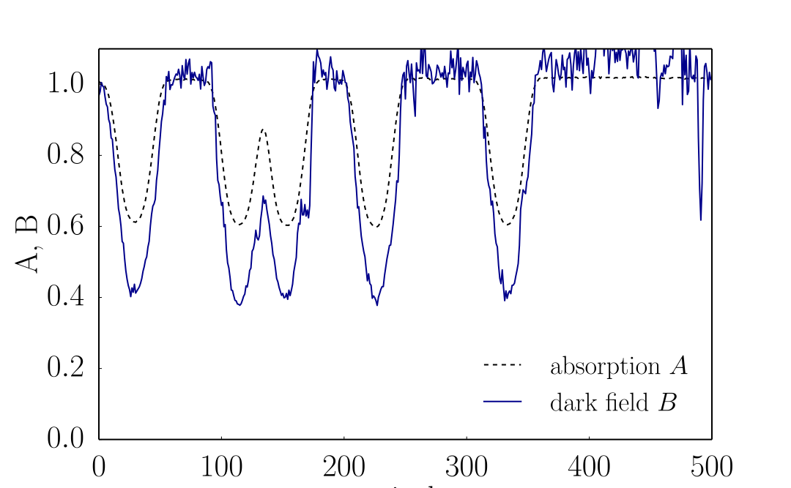

Grating interferometry above 100 keV
Previous episodes
- Bringing grating interferometry to energies between 60 and 160 keV
- First edge-on setup demonstrated at 100 keV
- Questions: dark field
Experimental updates
New setup at 120 keV
- 1st Talbot distance
- Nickel phase grating
- 60 cm total length
- foam dark field \(\rightarrow\)
Achieved reliable operation
The gratings
Electron microscope
- Duty cycle off by 10%
- Deformed lamellas
- Irregular growth
Questions about grating interferometry at high energies
Most important: why do we always get a strong dark-field signal?
1 mm copper rods
Hypotheses
- Sample inhomogeneities
- Artifact of the low visibility
- Compton scattering
- Polychromatic spectrum
Sample inhomogeneities
Signal present also for parallel blocks of pure elements
On the other hand, it does not respond to strong inhomogeneities, e.g. oriented fibers.
Fourier analysis with low visibility
Signal-to-noise ratio in x ray dark-field imaging using a
grating interferometer
Chabior et al. 2011
Claim: low SNR \(\rightarrow B \propto A\)
Simulation of noisy
fourier component analysis
- \(a_0 + a_1 \cos(x + \phi)\)
- 100 000 curves for each value of \(a_0\) and \(a_1\)
- 9 phase steps
- Poisson noise
- Comparison of FFT and weighted fit
FFT vs weighted fit
Gauss-Markov theorem
The weighted fit is the minimum variance estimator
But the difference is very small for \(v < 50\%\)
Dark field
Biased estimator only for low exposure
\(\Rightarrow\) relevant for strongly absorbing samples
Compton scattering
Compton scattering
\(\approx\) 100 times stronger than coherent scattering @100 keV
Compton scattering
strongly suppressed by the thick absorption grating
acceptance angle \(\alpha = 2p/d \approx 10^{-4}\)
\[ \begin{align*} p &= \text{pitch}\\ d &= \text{Talbot distance} \end{align*} \]Spectral properties
Monochromatic carpet
100 keV

Polychromatic visibility
Theoretical calculation from Thüring and Stampanoni "Performance and optimization of X-ray grating interferometry"
Polychromatic carpet
extremely wide spectrum: 10-160 keV

Thickness and material
Dispersion
Iron wedge, angle \( = \pi / 6 \)